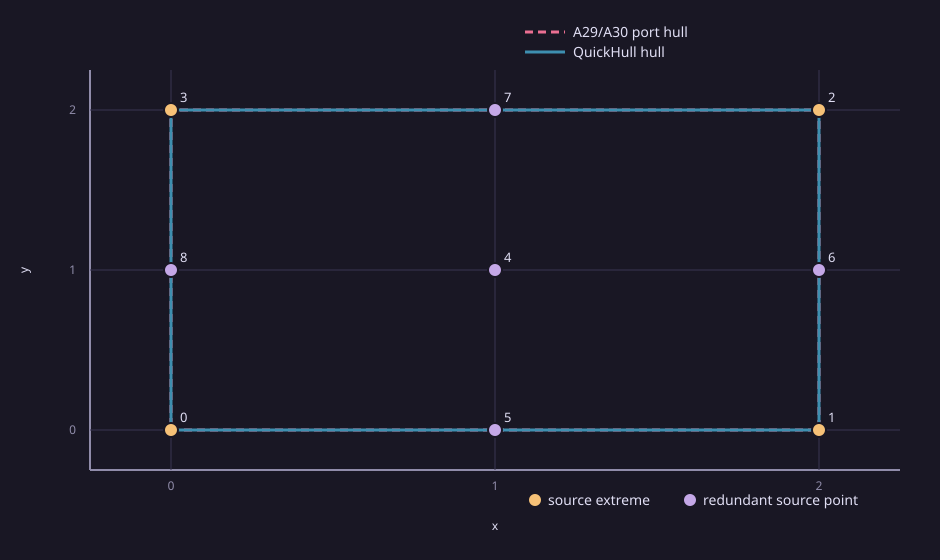

Geometry
The square corners are the hull. The center and four edge midpoints are redundant. Both methods receive the same canonical input bytes.

Input points in source order: [[0.0,0.0],[2.0,0.0],[2.0,2.0],[0.0,2.0],[1.0,1.0],[1.0,0.0],[2.0,1.0],[1.0,2.0],[0.0,1.0]]
Recorded attempts
1 excluded warmup and 5 measured repetitions per method. Execution order alternated between methods. Every attempt, including failure statuses, remains in the paired comparison record. Timings are method-local observations. Python/NumPy and C++ runtime measurements have different intervals and are inconclusive for speed comparison.
A29 timing wraps the Python port call and excludes the checker. QuickHull timing wraps the library call and excludes process startup, JSON intake, and the checker. No common limiter profile was collected. Host: AMD Ryzen 5 3550H with Radeon Vega Mobile Gfx, 8 logical CPUs, load averages [0.3525390625, 0.4267578125, 0.64892578125]. Memory limits were not enforced.
| Method | Measured repetitions | Method-local summary | Per-repetition duration | Exact checker |
|---|---|---|---|---|
| csl.geometry.a29-a30-python | 5 | median 3662645 ns; range 3501170–4205805 ns | r1: 3697635 ns, r2: 3662645 ns, r3: 3501170 ns, r4: 4205805 ns, r5: 3583305 ns | 6/6 attempts verified |
| csl.geometry.quickhull-2d | 5 | median 21232 ns; range 16902–25562 ns | r1: 21232 ns, r2: 16902 ns, r3: 25562 ns, r4: 19765 ns, r5: 23397 ns | 6/6 attempts verified |
Attempt details
| Method | Repetition | Warmup | Status | Duration ns | Source indices | Exact checker |
|---|---|---|---|---|---|---|
| csl.geometry.a29-a30-python | 0 | True | completed | 15356121 | 0:3:1:2 | verified |
| csl.geometry.a29-a30-python | 1 | False | completed | 3697635 | 0:3:1:2 | verified |
| csl.geometry.a29-a30-python | 2 | False | completed | 3662645 | 0:3:1:2 | verified |
| csl.geometry.a29-a30-python | 3 | False | completed | 3501170 | 0:3:1:2 | verified |
| csl.geometry.a29-a30-python | 4 | False | completed | 4205805 | 0:3:1:2 | verified |
| csl.geometry.a29-a30-python | 5 | False | completed | 3583305 | 0:3:1:2 | verified |
| csl.geometry.quickhull-2d | 0 | True | completed | 16064 | 0:1:2:3 | verified |
| csl.geometry.quickhull-2d | 1 | False | completed | 21232 | 0:1:2:3 | verified |
| csl.geometry.quickhull-2d | 2 | False | completed | 16902 | 0:1:2:3 | verified |
| csl.geometry.quickhull-2d | 3 | False | completed | 25562 | 0:1:2:3 | verified |
| csl.geometry.quickhull-2d | 4 | False | completed | 19765 | 0:1:2:3 | verified |
| csl.geometry.quickhull-2d | 5 | False | completed | 23397 | 0:1:2:3 | verified |
Scope and provenance
Single bounded 2D synthetic fixture; this is an initial algorithm-functionality example, not a general correctness or performance claim. Source commit: 215ea5609d0d2ecf59627d342b126951b330f872. Report: exp06-1d8f520bff781737.
Exact source commit · Paired comparison record · Input fixture · Capture metadata · Attempt table · File hashes
Reproduce
python3 -m pip install -r tools/legacy-ports/A29/requirements.txt cmake -S . -B build/exp06 -DBUILD_TESTING=OFF -DCMAKE_BUILD_TYPE=Release -DCSL_ENABLE_HIGHS=OFF -DCSL_ENABLE_QHULL=OFF -DCSL_BUILD_EXP06_PILOT=ON cmake --build build/exp06 --target csl_exp06_quickhull csl_exp06_pack_comparison --parallel 2 python3 scripts/reports/exp06/collect.py --quickhull build/exp06/csl_exp06_quickhull --packer build/exp06/csl_exp06_pack_comparison --out reports/algorithm-results/exp06-rerun python3 scripts/reports/exp06/render_saved.py --bundle reports/algorithm-results/exp06-rerun